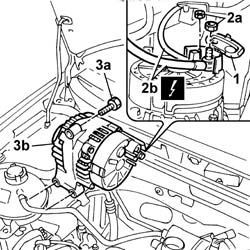
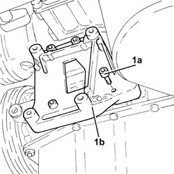
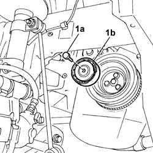
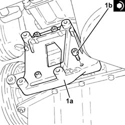
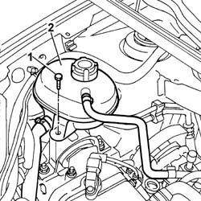
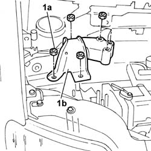
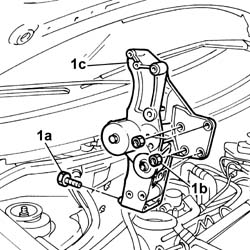

5040A26 compressor mount - r r
- Path
- Procedures > 50 AUXILIARY UNITS > 5040 AIR CONDITIONING CASING AND COMPONENTS > 5040A air conditioner coolant circuit > 5040A26 compressor mount - r r
- Kind
- repair procedure (removal / refitting; the operation number is the code)
- Applies to
- all engines; all production periods
- Interactive page
- https://sloeber94.github.io/elrnDB-fPnd/en/#/2752878
Applies to: engines: 1.1, 1.2 8v; all production periods
 Removing
Removing
 Refitting
Refitting1092B40 air conditioner compressor/alternator drive belt - r + r
1092A12 crankshaft pulley - r+r for versions with air conditioner
5040A20 air conditioner compressor - r+r - includes fluid level check and top up if necessary
1. Open the wiring protective cover.
2. Undo the fixing nuts (2a) and disconnect the alternator electrical wiring (2b).
 | Name | Connector |
|---|---|---|
2b | Starter' motor | A20A |
| Name | Connector |
|---|---|---|
2b | Starter' motor | A20B |
3. Undo the fixing bolts (3a) and remove the alternator (3b).

Applies to: engines: 1.3 JTD 16v; all production periods
Removing
RefittingRemove the car from the ramps.
Disconnect the battery negative terminal.
0010T84 coolant for air conditioning system dehydrate and recharge
5040A20 air conditioner compressor - r+r - includes fluid level check and top up if necessary
1. Undo the bolts (1a) and remove the air conditioning compressor support (1b).

Applies to: engines: 1.1, 1.2 8v; all production periods
1. Undo the bolt (1a) fixing the various components belt automatic tensioner pulley (1b) and remove it.

Applies to: engines: 1.3 JTD 16v; all production periods
Refitting
Removing1. Place the air conditioning compressor mounting (1a) back in its housing and fix it tightening the bolts (1b) to the recommended torque.
 | Fastening | Component | Ø | Value (daNm) |
|---|---|---|---|---|
1b | Bolt | COMPRESSOR MOUNT (AC) | M8 | (Upper and lower engine crankcase side) 2.3 ÷ 2.8 |

Applies to: engines: 1.1, 1.2 8v; all production periods
Undo the accessible nuts/bolts fastening the compressor support to the cylinder block/crankcase.
Lower the vehicle.
1. Undo retaining bolts
2. Move the coolant reservoir complete with pipes away from the work area.

Applies to: engines: 1.3 JTD 16v; all production periods
5040A20 air conditioner compressor - r+r - includes fluid level check and top up if necessary
0010T84 coolant for air conditioning system dehydrate and recharge
Connect the battery negative terminal.
Remove the vehicle from the ramp.
Applies to: engines: 1.1, 1.2 8v; all production periods
Position a suitable hydraulic lift under the engine oil sump.
1. Unscrew nuts (1a) securing the flexible block (1b) to the timing end engine mount.

Applies to: engines: 1.1, 1.2 8v; all production periods
Using a calibrated movement, adjust the hydraulic lift and raise the timing side power unit to gain space.
1. Undo the fixing nuts (1b) and bolts (1a) and remove the compressor support (1c).

Applies to: engines: 1.1, 1.2 8v; all production periods
Refitting
RemovingPlace the compressor support in position and tighten the fixing nuts and bolts.
| Fastening | Component | Ø | Value (daNm) |
|---|---|---|---|---|
- | Nut | COMPRESSOR MOUNT (AC) | M10 x 1.25 | 5 |
| Fastening | Component | Ø | Value (daNm) |
|---|---|---|---|---|
- | Bolt | COMPRESSOR MOUNT (AC) | M10 x 1.25 | 5 |
Lower the power unit.
Position the flexible block and tighten the nuts to the required torque.
| Fastening | Component | Ø | Value (daNm) |
|---|---|---|---|---|
- | Nut | FRONT RUBBER MOUNTS | M10 x 1.25 | 5 |
Remove the hydraulic lift.
Fit the engine coolant reservoir in place and tighten the fixing bolt.
Fit the various components drive belt automatic tensioner pulley in place and tighten the fixing bolt.
5040A20 air conditioner compressor - r+r - includes fluid level check and top up if necessary
1092A12 crankshaft pulley - r+r for versions with air conditioner
1092B40 air conditioner compressor/alternator drive belt - r + r
0010T84 coolant for air conditioning system dehydrate and recharge
Topics linked from this page (6)
- 0010T84 coolant for air conditioning system dehydrate and recharge
- 1092A12 crankshaft pulley - r+r for versions with air conditioner
- 1092B40 air conditioner compressor/alternator drive belt - r + r
- 4450B04 right front wheel r r
- 5040A20 air conditioner compressor - r+r - includes fluid level check and top up if necessary
- 5510C26 rpm sensor - r+r